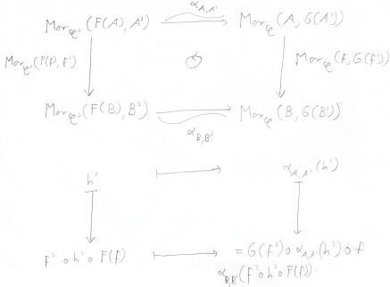
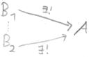

Contents
Categories and Functors
"general abstract nonsense", "functors leave complexes
complex"
- category
- A category C consists of a family Ob C
of objects, and for each A,B∈Ob
C a set MorC(A,B)
of morphisms between A and B
such that
| r |
∀A∈Ob C
∃idA∈MorC(A,A) |
reflexive, identity |
| t |
∀A,B,C∈Ob
C ∃∘:MorC(B,C)×MorC(A,B)→MorC(A,C)
with |
transitive, composition |
| n |
∀A,B∈Ob
C ∀g∈MorC(A,B)
g∘idA = g |
neutral |
| ∀A,B∈Ob
C ∀f∈MorC(B,A)
idA∘f = f |
| a |
∀A,B,C,D∈Ob
C ∀f∈MorC(A,B)∀g∈MorC(B,C)∀h∈MorC(C,D)
(h∘g)∘f = h∘(g∘f) |
associative |
We usually assume that MorC(A,B)
∩ MorC(C,D)
= ∅ unless A=C ∧
B=D.
Write: f:A→B for
f∈MorC(A,B)
☡ Beware: Unlike MorC(A,B),
Ob C does not need to be a set of objects,
but only a class of objects. Nevertheless we formally write ∈,⊆ etc.
- covariant
functor
- A covariant functor F:C→D
between two categories C and D
consists of a map F:Ob C→Ob
D and for each A,B∈Ob
C a map F:MorC(A,B)→MorD(F(A),F(B))
that satisfies the following conditions
| 1 |
∀A∈Ob C
F(idA) = idF(A) |
unital |
| m |
∀f∈MorC(A,B)∀g∈MorC(B,C)
F(g∘f) = F(g)
∘ F(f) |
morph |
☡ Beware: F:C→D
is not a map, since C,D
are no sets (they are categories) and even Ob C,Ob
D need not be sets.
- contra-
variant
functor
- A contravariant functor F:C→D
between two categories C and D
consists of a map F:Ob C→Ob
D and for each A,B∈Ob
C a map F:MorC(A,B)→MorD(F(B),F(A))
that satisfies the following conditions
| 1 |
∀A∈Ob C
F(idA)
= idF(A) |
unital |
| m° |
∀f∈MorC(A,B)∀g∈MorC(B,C)
F(g∘f) = F(f)
∘ F(g) |
contra-morph |
A contravariant functor F:C→D
is a covariant functor F:C→D°
(or F:C°→D).
- natural
trans-
formation
 A natural transformation (or morphism of functors) α:F→G
between the functors F,G:C→D
is a family (αC∈MorD(F(C),G(C)))C∈Ob
C of morphisms such that
A natural transformation (or morphism of functors) α:F→G
between the functors F,G:C→D
is a family (αC∈MorD(F(C),G(C)))C∈Ob
C of morphisms such that
∀f∈MorC(C,C')
G(f)∘αC
= αC'∘F(f)
The functors C→D
form a category with natural transformations being the morphisms.
Remark: an isomorphism of functors is just a family of isomorphisms (αC∈IsoD(F(C),G(C)))C∈Ob
C with the above property (⇒
especially F(C)≅G(C)
∧ G(f) = αC'∘F(f)∘αC-1).
The elements of the monoid MorC(A,A)
are called endomorphisms of A. The elements of MorC(A,B)
that have an inverse in MorC(B,A)
are called isomorphisms. The elements of the group of isomorphisms in
MorC(A,A)
are called automorphisms.
| Let f∈MorC(A,A')
be a morphism. |
| monomorphism |
∀B∈Ob C
mB(f) injective |
f is left cancelable |
|
⇔ f injective |
(if C=Ens
) |
| epimorphism |
∀B∈Ob C
mB(f) injective |
f is right cancelable |
|
⇔ f surjective |
(if C=Ens
) |
- kernel ≤ equalizer
- i:X→A is a kernel of
f:A→B :⇔
f∘i = 0, and ∀j:X'→A with f∘j=0
∃!j':X'→X such that the diagram commutes
.
Write: i = ker(f)
- cokernel ≤ coequalizer
- p:B→Y is a kernel of
f:A→B :⇔
p∘f = 0, and ∀j:B→Y' with j∘f=0
∃!j':Y→Y' such that the diagram commutes
.
Write: p = coker(f)
- additive
- A category C is additive, if
|
∀A,B∈Ob
C HomC(A,B)
:= MorC(A,B)
is an Abelian(!)
group |
|
| d |
∘ is distributive over +, i.e. HomC(·,B)
and HomC(B,·)
are functors C→Ab
- ∀A,B,C∈Ob C ∀f∈HomC(B,C)
∀g,h∈HomC(A,B)
f∘(g+h) = (f∘g) + (f∘h)
- ∀A,B,C∈Ob C ∀f,g∈HomC(B,C)
∀h∈HomC(A,B)
(f+g)∘h = (f∘h) + (g∘h)
|
distributive |
- additive
- A functor F:C→D
between two additive categories C and D
is additive, if
∀A,B∈Ob C
F:HomC(A,B)→HomD(F(A),F(B))
homomorphism of groups
⇒ ∀G≅F G
is additive
- faithful
- A functor F is faithful, if it is injective on maps.
- full
- A functor F is full, if it is surjective on maps.
- Abelian
- A category C is Abelian, if
|
C is additive |
|
|
all coproducts, kernels and cokernels exist. (⇒ short exact sequences exist)
|
|
|
Isomorphism Theorem.
|
|
|
every monomorphism is the kernel of its cokernel (m = ker coker m),
every epimorphism the cokernel of its kernel (f = coker ker f).
|
normal |
⇔
|
C has a zero object |
|
|
all finitary limits and colimits exist
|
|
|
every monomorphism is the kernel of its cokernel (m = ker coker m),
every epimorphism the cokernel of its kernel (f = coker ker f).
|
normal |
Important Examples
-
For every category C, there is the opposite
(dual) category C° obtained by "turning
the arrows around", per Ob C° := Ob C,
and MorC°(A,B) := MorC(B,A),
whereas the identity morphisms are the same, and the composition is f∘C°g
:= g∘Cf.
Duality Principle: Any theorem holding for a category C
also holds (in C°) with all
arrows reversed.
-
Categories together with functors form a category.
-
Additive categories form a category together with additive functors.
-
Functors of fixed categories together with their natural transformations
form a category.
-
Let C be a category. For each X∈Ob C
there are two functors
- covariant hom-functor
| mX:=MorC(X,·) |
C |
→ |
Ens |
| Y |
↦ |
Y∗:=MorC(X,Y) |
| (f∈MorC(Y,Z)) |
↦ |
(MorC(X,Y)→MorC(X,Z);
g↦f∘g) |
- contravariant hom-functor
| mX:=MorC(·,X) |
C |
→ |
Ens |
| Y |
↦ |
Y∗:=MorC(Y,X) |
| (f∈MorC(Y,Z)) |
↦ |
(MorC(Z,X)→MorC(Y,X);
g↦g∘f) |
They result from currying ∘. The properties of being a functor
coincides with the properties of morphisms (n) and (a), here. mX
is the opposite of mX. If C
is additive we write HomC(X,·):=hX:=mX,
and HomC(·,X):=hX:=mX
for these (now additive) functors in C→Ab.
The properties of being additive coincides with (d).
-
Let C be a category, and S∈Ob C.
Then C/S is the category of S-objects in C
with
Ob C/S := {(X,f) ¦ X∈Ob C, f ∈MorC(X,S)}
MorC/S((X,f),(Y,g)) := {φ∈MorC(X,Y) ¦ f = g ∘ φ}
Further Terminology
- Yoneda-Lemma
- Let F be the category of functors C→Ens
⇒ ∀A,B∈Ob C the following map is
bijective
| α |
MorC(A,B) |
→̃ |
MorF(mB,mA) |
| τB(idB) |
↤ |
τ |
| φ |
↦ |
| αφ |
mB
| → |
mA |
| (αφ)C |
MorC(B,C)
| → |
MorC(A,C) |
| f |
↦ |
f∘φ |
|
If C is additive and F
the category of (additive?) functors C→Ab,
then α is an isomorphism of groups.
- adjoint
- 
F:C→C'
left-adjoint to G:C'→C
(and G right-adjoint to F)
:⇔
mF
:= MorC'(F(·),·)
≅ MorC(·,G(·))
=: mG
in C°×C'→Ens
"what F does to the source (adding primes) is what G does to the domain
(removing primes)"
- equivalent
categories
- F:C→C'
is an equivalence of categories :⇔
∃G:C'→C
with F∘G≅idC'
∧ G∘F≅idC
⇒ F left-adjoint to G
and conversely
Ismomorphic categories are equivalent.
For the following definition, A and A'
must be categories that have exact sequences (more precisely: Abelian
categories) .
- exact
- F:A→A'
is exact :⇔ F:A→A'
is a (covariant) additive functor, and
| If |
0 |
→ |
A' |
→α |
A |
→β |
A'' |
→ |
0 |
is an exact sequence in A |
| Then |
0 |
→ |
F(A') |
→F(α) |
F(A) |
→F(β) |
F(A'') |
→ |
0 |
is an exact sequence in A' |
That the image under F of the sequence (or any
complex) is a complex, is always true since F
is a functor.
- left exact
- F:A→A'
is left exact :⇔ F:A→A'
is a (covariant) additive functor, and
| If |
0 |
→ |
A' |
→α |
A |
→β |
A'' |
(→ |
0) |
is an exact sequence in A |
| Then |
0 |
→ |
F(A') |
→F(α) |
F(A) |
→F(β) |
F(A'') |
|
|
is an exact sequence in A'. |
- right exact
- F:A→A'
is right exact :⇔ F:A→A'
is a (covariant) additive functor, and
| If |
(0 |
→) |
A' |
→α |
A |
→β |
A'' |
→ |
0 |
is an exact sequence in A |
| Then |
|
|
F(A') |
→F(α) |
F(A) |
→F(β) |
F(A'') |
→ |
0 |
is an exact sequence in A'. |
F:A→A'
is right exact ⇔ F:A°→A'°
is left exact.
- injective
- I∈Ob A is injective :⇔ HomA(·,I) exact
⇔ ∀A'⊆A ∈ A ∀α':A'→I ∃α:A→I which is a continuation of α'.
A has sufficiently many injective objects :⇔ each object is a subobject of an injective object.
- projective
- P∈Ob A is projective :⇔ HomA(P,·) exact
⇔ ∀β:B→B'' surjective ∀γ:P→B''
∃γ̃:P→B which is a lifting, i.e. β∘γ̃ = γ.
A has sufficiently many projective objects :⇔ each object is a quotient of a projective object.
Universal Elements
Let C be a category.
- terminal
object
- 
A∈Ob C is a terminal object :⇔ ∀B∈Ob C
∃!φ∈MorC(B,A) ⇔ A is an
initial object in C°.
terminal objects are uniquely isomorph, i.e. each two terminal objects A,B
have a unique isomorphism A→B.
Terminal objects are the limits of the empty category.
- initial
object
 A∈Ob C is an initial object :⇔ ∀B∈Ob C
∃!φ∈MorC(A,B)
A∈Ob C is an initial object :⇔ ∀B∈Ob C
∃!φ∈MorC(A,B)
initial objects are uniquely isomorph, i.e. each two initial objects A,B
have a unique isomorphism A→B.
Initial objects are the colimits of the empty category.
- zero
object
- A∈Ob C is a zero object :⇔ A is an initial and terminal object.
- presentable
- a covariant (resp. contravariant) functor F:C→Ens
is presentable :⇔ ∃A∈Ob C F≅mA
(resp. F≅mA)
A is called presenting object for F.
- universal element
- If F:C→Ens
is a presentable covariant functor with a corresponding isomorphism of
functors α:mA→F,
then uF := αA(idA)
∈ F(A) is called universal element of F .
⇒ ∀B∈Ob
C ∀x∈
F(B)
∃!f∈Mor
C(A,B)=
mA(B)
x =
F(f)(u
F)
- (The converse is also true)
- if C and Ens
(then Ab) are additive, then (mA,F
are and) the αB
are isomorphisms of groups.
- More generally, if F (on morphisms) is
a homomorphism of a law + that ∘
is distributive over, then the αB
are isomorphisms of +.
Let F:C→Ens
be a presentable covariant functor.
- presenting objects for F are uniquely
isomorph. Precisely: for all isomorphisms of functors α:mA→F,
α':mA'→F
∃!φ:A→A' isomorphism with α∘αφ
= α'. (Because of Yoneda-Lemma).
- an isomorphism of functors α:mA→F
is uniquely determined by its universal element, i.e. ∀u∈F(A)
there is at most one α:mA→F
with αA(idA)=u.
Product and Coproduct
Let C be a category, and I be a set.
- product ≤ limit
 P∈Ob C, with the projectors πi∈Mor(P,Ai)
for i∈I, is a product of the objects (Ai)i∈I⊆Ob
C :⇔
P∈Ob C, with the projectors πi∈Mor(P,Ai)
for i∈I, is a product of the objects (Ai)i∈I⊆Ob
C :⇔
(∀C∈Ob C ∀(gi∈MorC(C,Ai))i∈I
∃!g∈MorC(C,P) ∀i∈I πi∘g
= gi )
Write: P = ∏i∈IAi
"product is universally attracting", and
product is the presenting object of the contravariant functor C→Ens; C ↦ Mor(C,A1)×Mor(C,A2)
with universal projector maps πi. Furthermore, it is just a terminal
object in a suitable category. Products are the limits of a functor from a
discrete category (i.e. which only has identity morphisms and thus
reduces to a family of objects).- coproduct ≤ colimit
 S∈Ob C, with the inclusions ιi∈Mor(Ai,S)
for i∈I, is a coproduct of the objects (Ai)i∈I⊆Ob
C :⇔
S∈Ob C, with the inclusions ιi∈Mor(Ai,S)
for i∈I, is a coproduct of the objects (Ai)i∈I⊆Ob
C :⇔
(∀C∈Ob C ∀(gi∈MorC(Ai,C))i∈I
∃!g∈MorC(S,C) ∀i∈I g∘ιi
= gi )
Write: S = ∐i∈IAi (= ∑i∈IAi,
sometimes ⊕i∈IAi)
"coproduct is universally repelling", and it is just an initial
object in a suitable category. A coproduct in C
is just a product in C°.- fibred-product
- X ×S Y is a fibred product of X ∈ Ob C and Y∈Ob C
over S∈Ob C if it is a product of (X,f) and (Y,g) in the category C/S
of S-objects. Also called pullback:
"parallel translation".
Pullbacks are the limits of a three-object category with
f:X→S, g:Y→S as non-identity morphisms. They visualize as commutative
squares with diagonal.
- equalizer ≤ limit
-
the map e∈Mor(E,X), with E∈Ob C, is an
equalizer of the maps f,g∈Mor(X,Y) :⇔
f∘e
= g∘e
∧ (∀E'∈Ob C ∀e'∈MorC(E',X)
f∘e'
= g∘e' ⇒
∃!η∈MorC(E',E) e'
= e∘η )
e is a unique monomorphism (up to isomorphism). f.ex. The kernel of f is the
equalizer of f and 0. Equalizers are the limits of the identity functor
from a two-object category with two parallel morphisms in between.
- coequalizer ≤ colimit
-
the map c∈Mor(Y,C), with C∈Ob C, is a coequalizer of the
maps f,g∈Mor(X,Y) :⇔
c∘f
= c∘g
∧ (∀C'∈Ob C ∀c'∈MorC(Y,C')
c'∘f
= c'∘g ⇒
∃!γ∈MorC(C,C') c'
= γ∘c )
c is a unique epimorphism (up to isomorphism). f.ex. The cokernel of f is the
coequalizer of f and 0.
As terminal or initial objects, products and coproducts are uniquely
determined up to a unique isomorphism. Even more so as they are special cases of
limits and colimits.
Limits and Colimits
Let C, J be
categories.
- limit
-
L∈Ob C, together with φX∈MorC(L,F(X))
for each X∈Ob J, is a cone of the covariant
functor F:J→C
:⇔
∀f∈MorJ(X,Y)
F(f)∘φX=φY
A limit of the covariant functor F:J→C
is a universal cone
(L,(φX)X∈Ob
J), i.e.
the morphisms of any cone factor through L with the unique factorization u, i.e.
∀(N,(ψX)X∈Ob
J) cone of F
∃!u∈MorC(N,L) ∀X∈Ob J
φX∘u = ψX
Write: L = lim F
= lim← F "glue together related objects by morphisms".
Limits relativate products to the situation where the morphisms commute
over the F(f).
Limits are sometimes also known as inverse limit or projective
limit. Examples of limits include products, terminal objects, equalizers,
kernels, pullbacks.
- colimit
-
L∈Ob C, together with a family φX∈MorC(F(X),L)
for X∈Ob J, is a co-cone of the covariant
functor F:J→C
:⇔
∀f∈MorJ(X,Y)
φX∘F(f)=φY
A colimit of the covariant functor F:J→C is a universal
co-cone (L,φX), i.e.
∀(N,(ψX)X∈Ob
J) co-cone of F
∃!u∈MorC(L,N) ∀X∈Ob J
u∘φX = ψX
Write: L = colim F = lim→ F
F:J→C has a colimit ⇔
∀N∈Ob C the covariant functor X↦MorC(F(X),N)
in Jop has a limit.
⇒ MorC(colim F,N)
= lim MorC(F(·),N)
"Colimits are for glueing together mathematical objects."
Colimits are sometimes also known as direct limit or inductive limit.
Examples of colimits include coproducts, inital objects, coequalizers,
cokernels, pushouts.
Limits and colimits are uniquely
determined up to a unique isomorphism, because they are inital (resp. terminal)
objects in the category of cones of F.